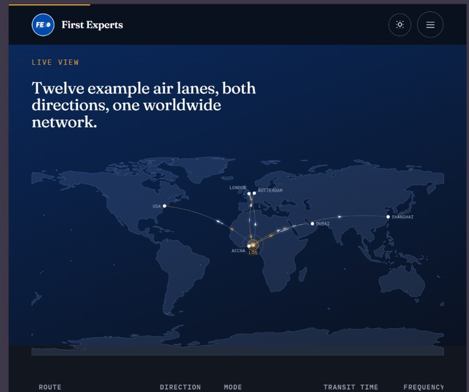
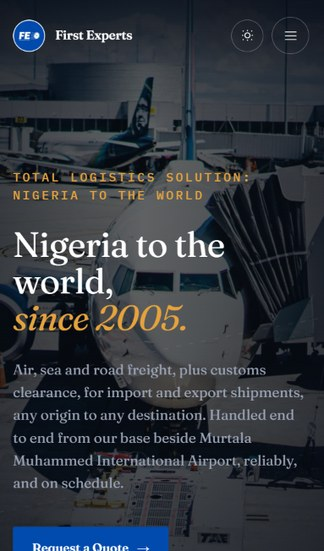
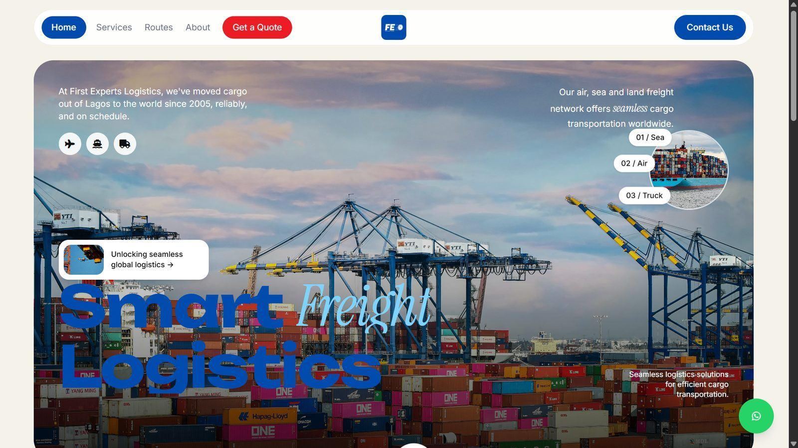

SHIPMENT
TRACK
CLEAR
DELIVER
FIRST EXPERTS LOGISTICS SOLUTIONS
A full rebuild for a real freight forwarding and customs clearance company, established in 2005, still live and in daily use.

The client
First Experts Logistics Solutions handles freight forwarding and customs clearance, and has operated since 2005. I now also manage the company's social media, which means this site was not a one off engagement, it is a business I continue to work with directly.
The rebuild
23 pages at last count, using real company photography rather than stock images, with a genuine blog rather than placeholder articles. Every image was optimized rather than uploaded at source resolution. The site is still actively worked on, so that page count is a floor, not a ceiling.
The redesign
The homepage has since been rebuilt again. It now opens with two live widgets side by side rather than a static banner: the exchange rate ticker on the left, and a new "Our network, right now" panel on the right showing shipments in motion, delivered, and total tracked, pulled straight from the same tracking sheet that powers the tracking page. Further down, a "Live view" section renders an animated world map showing example air lanes between Lagos and hubs like Rotterdam, London, Dubai, Shanghai, and the US. Services are now organized as six dedicated pages, Air Freight, Sea Freight, Door to Door / Road, Customs Clearance, Haulage, and E commerce Logistics, and the old contact form has become a three step "Get a free quote today" flow: shipping mode, shipment details, then contact details, with a WhatsApp link for anyone who would rather just talk to a person.
The tracking page
The most technically interesting part of this site is the shipment tracking page. It pulls a live exchange rate from the Frankfurter API rather than a hardcoded number, and reads shipment status from a Google Sheet the client can update directly without touching code. The page auto detects which carrier a tracking number belongs to, UPS, FedEx, DHL, Maersk, or MSC, by pattern matching the structure of the number itself, so the client never has to manually tag which carrier a shipment came from.
Why a spreadsheet, not a database
This client did not need, and did not want, a custom admin panel to manage. A Google Sheet is something their team already knows how to use, and reading it as a live data source gave them a real, working feature without adding a system they would have to learn.
What I would change today: the carrier detection pattern matching is solid for the five carriers it covers, but it silently fails for anything outside that list rather than showing a clear "carrier not recognized" message. That is worth fixing before it confuses a real customer.
A real database would have been the more "correct" engineering choice in isolation. It would also have meant the client depends on me for every data change. The spreadsheet trades some technical rigor for real independence.


No screenshots of the original WordPress site survive, it was built by a previous developer and never captured. What is shown here instead is an earlier iteration of my own hand coded rebuild, before the redesign that is live today.

Running a business that needs its site rebuilt properly
Real photography, a working tracking feature, and a site your team can actually update.